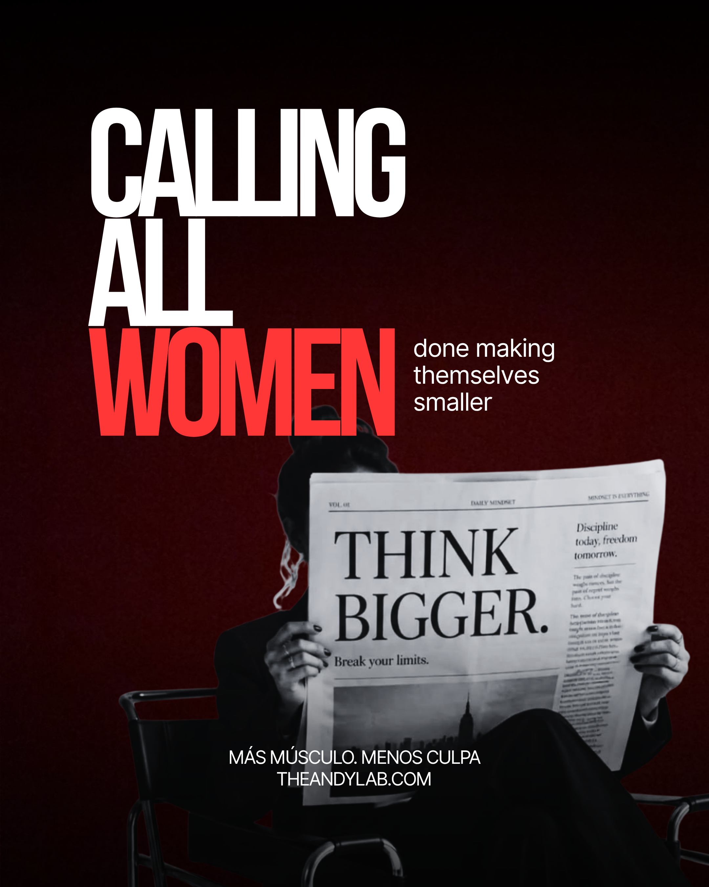
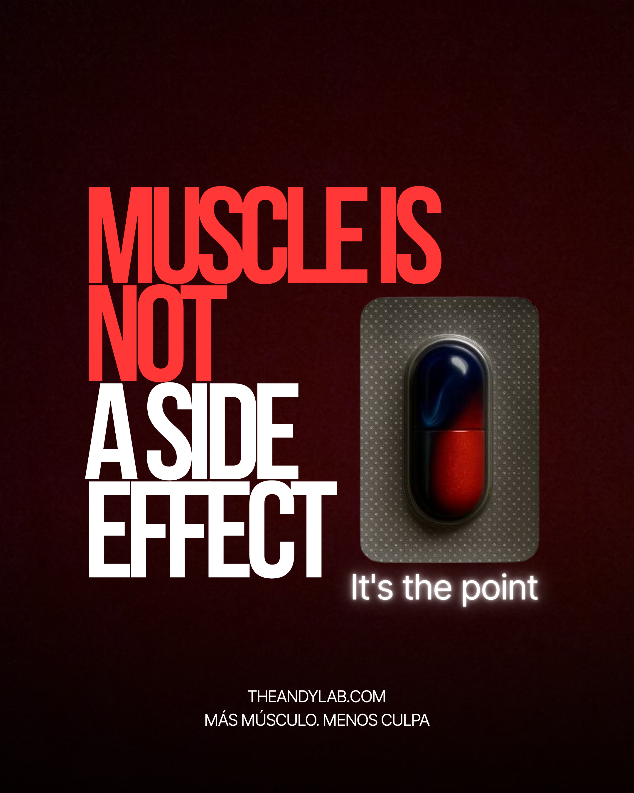
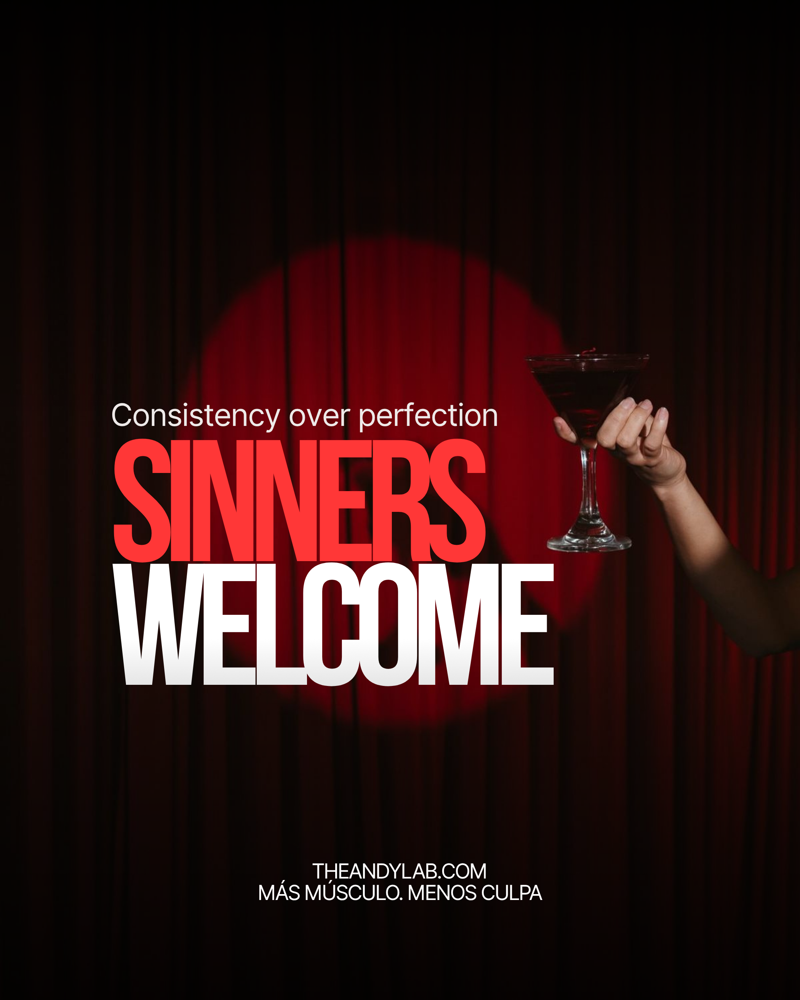

Llevas años encogiéndote comiendo menos, haciendo solo cardio y pilates. Este proyecto es todo lo contrario.
You've spent years shrinking — eating less, doing only cardio and pilates. This project is everything opposite.
Más músculo. Menos culpa.Años comiendo menos, escondida en la clase grupal, esperando a que se desocupe la zona de pesas, diciendo que sí cuando quieres decir que no. Aquí se ocupa espacio. En el gym, en la mesa y en la sala de reuniones.
You've spent years hiding — eating less, stuck in group classes, waiting for the weights area to empty, saying yes when you meant no. Here you take up space. In the gym, at the table, in the boardroom.

El músculo no llega de rebote mientras persigues otra cosa. Se busca, se planea y se construye a propósito. Tonificar es una palabra de revista. Aquí se entrena fuerza para no depender de nadie a los 70. Tampoco ahora. Fuerte, capaz y libre, dentro del gym y fuera de él.
Muscle doesn't come as a side effect while chasing something else. You search for it, plan it and build it on purpose. Toning is a magazine word. Here we train for strength so you don't need anyone at 70. Not now either. Strong, capable and free — inside the gym and out.

Perfección es una palabra que aquí no se usa. Motivación y disciplina tampoco, porque se acaban un martes cualquiera. Lo que queda es entender cómo decide tu cerebro, para que la culpa pierda su sitio y armes un sistema a tu medida. Aquí las pecadoras son bienvenidas.
Perfection is a word we don't use here. Motivation and discipline either, because they disappear any Tuesday. What's left is understanding how your brain decides, so guilt loses its place and you build a system that fits you. Here sinners are welcome.

"I've literally never looked, or felt, better."
The Andy Lab has completely changed the way I see fitness as a way to feel stronger and healthier, rather than a way to stay 'small'. It's the first app I've tried that has helped me improve my nutrition without making me feel like I'm on a diet, and I've literally never looked (or felt!!) better. I recommend it to every woman I know.
Amy B. · London
"Ese odio a las pesas se puede cambiar."
"That hatred of weights can change."
Siempre me consideré deportista (correr, nadar, bici, pilates) pero las pesas siempre las vi con malos ojos. Hoy rindo mucho más en cardio, me siento más equilibrada, y todo empezó con un entrenamiento a mi medida. Soy una muestra fiel de que suma más de lo que uno cree.
I always looked down on weights. Today I perform much better in cardio, I feel more balanced, and it all started with a program tailored to me. I'm living proof it adds up more than you think.
Laura C. · Madrid
"El gran punto de inflexión."
"The turning point."
Trabajar con Andrea me ha permitido ver que tenemos cierta barrera las mujeres. Poder enfrentarme a las máquinas desconocidas y que me hicieran un programa a mi medida ha sido el gran punto de inflexión, Andreíta. Y ya si además me lleva a bailar, fenomenal.
Working with Andrea showed me the barriers we women carry. Facing unfamiliar machines with a program made for me was the real turning point.
Bea C. · Madrid
"Me ayudó a sentirme fuerte en el postparto."
"It helped me feel strong postpartum."
The Andy Lab me dio las herramientas para volver poco a poco a sentirme fuerte después de dar a luz. Tomar conciencia de mi cuerpo y su capacidad ha sido clave.
The Andy Lab gave me the tools to gradually feel strong again after giving birth. Becoming aware of my body and its capacity has been key.
Laura E. · Madrid
"No sabía que iba a ser tan fácil engancharme."
"I didn't know it'd be so easy to get hooked."
Yo sabía que tener fuerza era esencial para mi salud. Lo que no sabía es que iba a ser tan fácil engancharme y ver resultados. ¡Gracias Andy por guiarme y siempre estar ahí!
I knew strength was essential for my health. What I didn't know was how easy it'd be to get hooked and see results. Thank you Andy for guiding me and always being there!
Laura G. · Madrid
"Every session leaves me feeling stronger."
The training is challenging, engaging, and incredibly effective. Even when you're unable to do certain movements, Andy tweaks the program so you don't lose out. I can't recommend The Andy Lab enough!
Nicole R. · Hamburg
"I finally just... go to the gym."
I'd been going to the gym on and off for years before working with Andrea. Having an actual program makes it so much easier to just show up, but what really changed things is how she thinks about behavior. She's helped me figure out how to fit healthier habits into my actual life, not some ideal version of it. It's not just about the workouts. It's how I eat, how I build routines, what's realistic for me. It adapts instead of fighting against how I actually live.
Sarah · Amsterdam
"Totalmente personalizado. Eso lo hace diferente."
"Fully personalized. That's what makes it different."
Me gusta esta propuesta de The Andy Lab porque se centra en la individualización, y no en lo masivo. Es totalmente personalizado y eso lo hace diferente. El componente de conocimiento, rigor y ejemplo que brinda Andrea como guía en el proceso generan confianza y despiertan un gran compromiso. Su plataforma es intuitiva y útil, lo que hace más agradable el entrenamiento.
What I like about The Andy Lab is that it focuses on the individual, not the masses. It's fully personalized and that's what makes it different. Andrea's knowledge, rigor, and the example she sets as a guide build trust and create real commitment. The platform is intuitive and useful, which makes training more enjoyable.
Juliana O. · Abu Dhabi
"Tenía miedo de ir al gimnasio. Ni un paso atrás."
"I was afraid of the gym. Not one step back."
Antes de comenzar el entrenamiento con Andy, tenía miedo de ir al gimnasio, sin ningún tipo de guía ni de formación. El plan individualizado y su cercanía me ayudaron a vencer ese miedo. Los vídeos explicativos son muy claros, y el plan de incremento de pesos te anima al ver el avance. La revisión de mi alimentación me ayudó a mejorar la distribución de nutrientes, tener mayor energía a lo largo del día y facilitar la construcción muscular. El proceso de cambio en mi cuerpo y los hábitos a largo plazo están siendo algo real.
Before training with Andy, I was afraid of the gym, with no guidance or training. The individualized plan and her closeness helped me overcome that fear. The explanatory videos are very clear, and the progressive weight plan motivates you as you see progress. The nutrition review helped me improve how I distribute nutrients, have more energy throughout the day, and build muscle. The changes in my body and the long-term habits are becoming something real.
Cecilia P. · Madrid
Si pensamos igual, el Lab es donde pasamos a la acción.
If something resonated, the Lab is where it gets built.